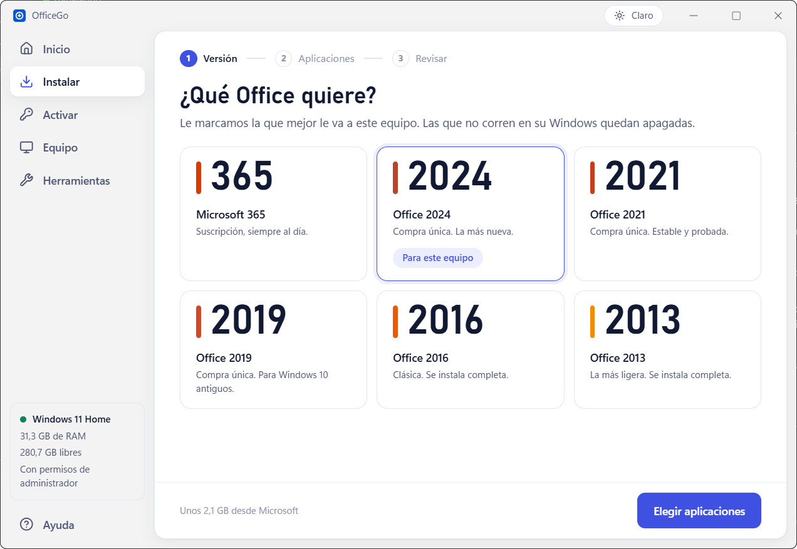
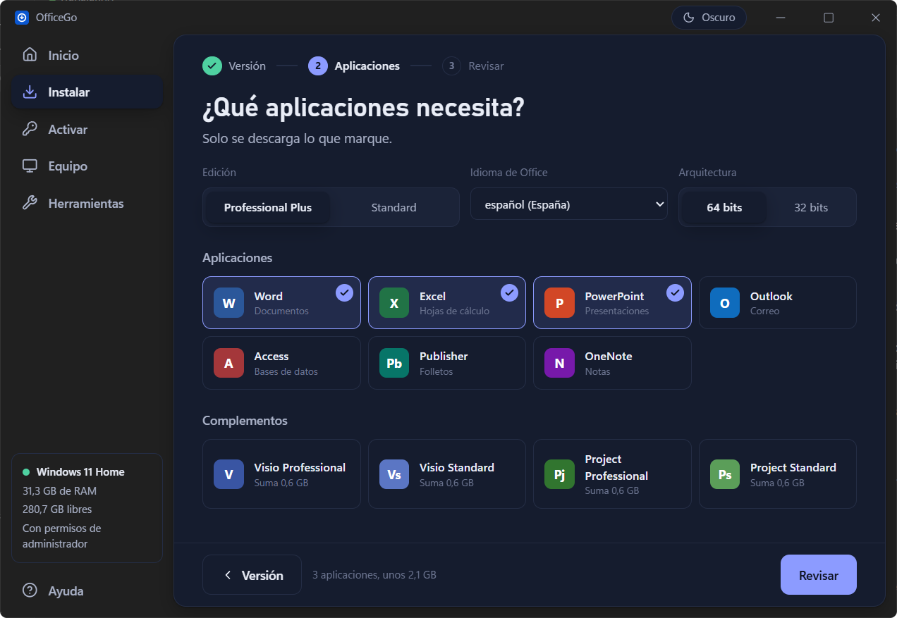
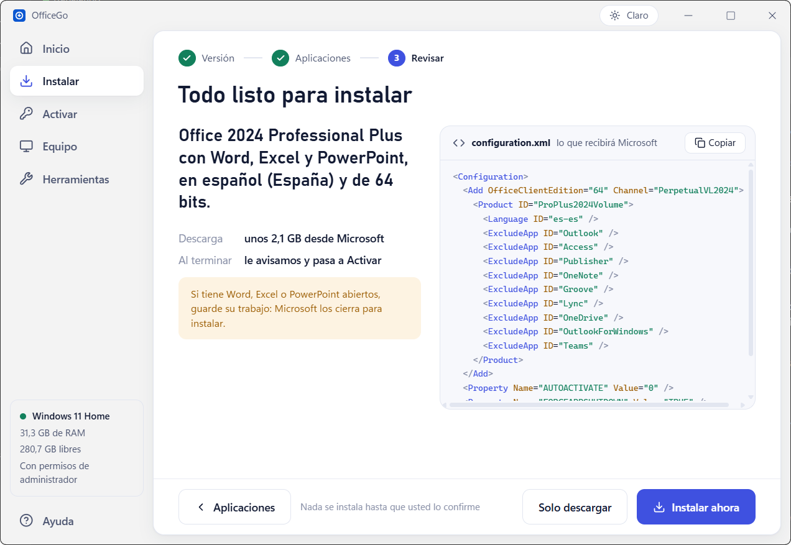
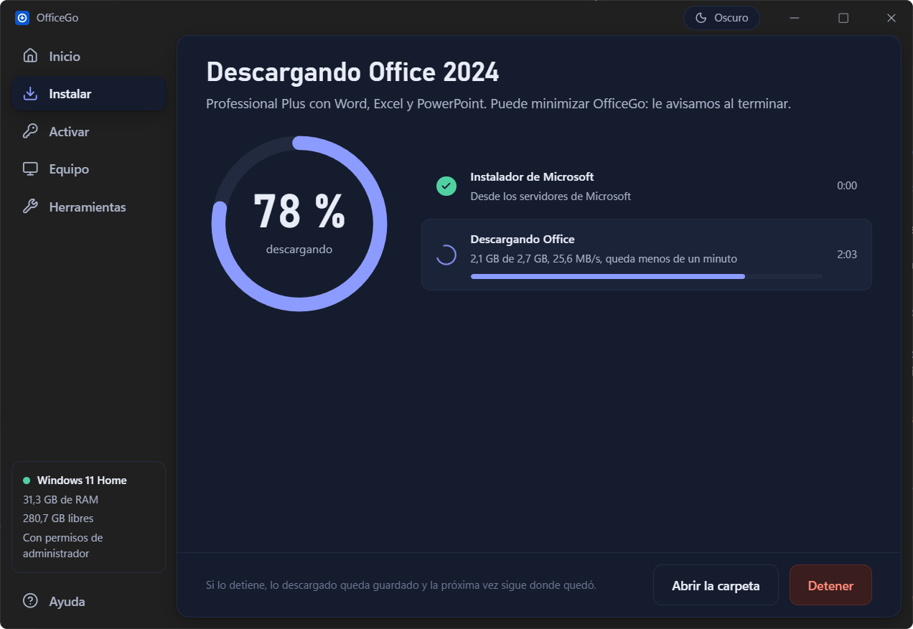
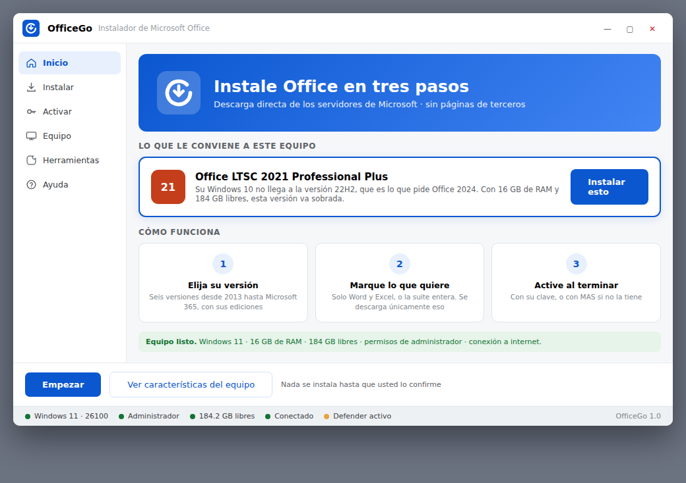

Mira tu equipo, te dice qué versión le cabe y la baja de los servidores de Microsoft con solo lo que marques.
Gratis y de código abierto. Versión 2.6.0, 1,6 MB. Ver el video
Primero eliges la versión.
Seis, de 2013 a Microsoft 365. Te marca la que le va a tu Windows y apaga las que no corren en él.

Luego marcas tus aplicaciones.
Solo Word y Excel, la suite entera o con Visio y Project. Lo que tu edición no trae sale apagado.

Revisas lo que vas a pedir.
Antes de instalar ves tu elección en una frase y el configuration.xml exacto que recibirá Microsoft.

Y lo ves bajar de verdad.
Porcentaje medido en el disco, velocidad y lo que falta. Si lo detienes, sigue donde quedó.

Con Windows 11 le caben todas. Te marcamos la más nueva de compra única.
La app lo lee sola al abrir. Aquí lo eliges tú para ver qué le cabe a cada uno.
Es el archivo que OfficeGo le da a la herramienta oficial de Microsoft. Arriba elegiste Office 2024; aquí marcas lo demás y lo ves escribirse con las reglas de la app.
Lo que no marques se excluye. Con Standard, Access no viene.
Van en el mismo archivo y suman unos 0,6 GB cada uno.
<Configuration>
<Add OfficeClientEdition="64" Channel="PerpetualVL2024">
<Product ID="ProPlus2024Volume">
<Language ID="es-es" />
<ExcludeApp ID="Outlook" />
<ExcludeApp ID="Access" />
<ExcludeApp ID="Publisher" />
<ExcludeApp ID="OneNote" />
<ExcludeApp ID="Groove" />
<ExcludeApp ID="Lync" />
<ExcludeApp ID="OneDrive" />
<ExcludeApp ID="OutlookForWindows" />
<ExcludeApp ID="Teams" />
</Product>
</Add>
<Property Name="AUTOACTIVATE" Value="0" />
<Property Name="FORCEAPPSHUTDOWN" Value="TRUE" />
<Display Level="Full" AcceptEULA="TRUE" />
</Configuration>Office 2024 Professional Plus con Word, Excel y PowerPoint. Unos 2,1 GB desde Microsoft.
Crear instalador sin conexión deja Office entero en la carpeta que elijas. La llevas a otro equipo, sin internet, y abres instalar.cmd.
D:\Office 2024 para el aula
| Office\Data\16.0.17932.21056\stream.x64.x-none.dat | 2,7 GB |
| Office\Data\16.0.17932.21056\stream.x64.x-none.arm64x.dat | 434 MB |
| Office\Data\16.0.17932.21056\stream.x64.es-es.dat | 256 MB |
| Office\Data\16.0.17932.21056\i640.cab | 32 MB |
| Office\Data\16.0.17932.21056\a640_exp.cab | 3,9 MB |
| Office\Data\16.0.17932.21056\s640.cab | 3,6 MB |
| setup.exe | 6,9 MB |
| configuration.xml | 1 KB |
| instalar.cmd | 1 KB |
| y otros archivos de Office\Data de menos de 1 MB |
instalar.cmd
@echo off
cd /d "%~dp0"
setup.exe /configure configuration.xmlEquipo, Copiar informe
== OfficeGo · informe del equipo ==========================
Sistema Windows 11 Home (build 26300.9711) · 64 bits
PowerShell 5.1.26100.9711
Procesador AMD Ryzen 7 260 w/ Radeon 780M Graphics
8 núcleos / 16 hilos · 3,8 GHz
Memoria 31,3 GB (2 módulos) · 11,2 GB libres
Gráficos AMD Radeon 780M Graphics · 1920 × 1200
Disco C: 951,8 GB · 280,7 GB libres
Administrador sí
Defender sí
Office no instalado
Recomendado Office 2024: El equipo cumple los
requisitos de la versión más nueva.
===========================================================quitar.xml
<Configuration>
<Remove All="TRUE" />
<Property Name="FORCEAPPSHUTDOWN" Value="TRUE" />
<Display Level="Full" AcceptEULA="TRUE" />
</Configuration>OfficeGo es para Windows 10 y 11.
El instalador se pone en tu equipo y se actualiza solo. El portátil es la misma app en un archivo, sin instalar: para llevarla en un USB. Versión 2.6.0, publicada el 22 de octubre de 2026. Qué trae
La misma recomendación en una ventana de Windows. Para equipos viejos o sin WebView2: doble clic y listo.
irm https://raw.githubusercontent.com/MariaDSalazar/officego/main/OfficeGo.ps1 | iexPégalo en PowerShell como administrador y se abre la versión PowerShell.
& ([scriptblock]::Create((irm https://raw.githubusercontent.com/MariaDSalazar/officego/main/OfficeGo.ps1))) -Instalar 2021 -Apps Word,Excel,PowerPoint -SilenciosoVersión, aplicaciones, idioma y bits por la línea de órdenes, sin preguntas. Para preparar varios equipos iguales.
El motor en PowerShell, la app en Svelte y Rust con Tauri 2, y las pruebas de las dos. Cada versión se compila en GitHub a la vista de todos.
OfficeGo empezó como un script de desarrollo en PowerShell. Resultó útil para más gente que necesitaba algo más simple, así que lo convertimos en una app de escritorio. Por eso de la 1.2 pasó directo a la 2.0, el mismo 27 de julio de 2026.

¿Cuánto cuesta?
OfficeGo es gratis y de código abierto. Office necesita su propia licencia: lo activas con tu clave de producto en la pantalla Activar.
¿De dónde baja Office?
De officecdn.microsoft.com, con la herramienta oficial de Microsoft. Office 2016 y 2013, de c2rsetup.officeapps.live.com, el instalador de Microsoft para esas versiones.
¿Qué versión de OfficeGo bajo?
La app si tu Windows está al día: es la más cómoda y se actualiza sola. La versión PowerShell si el equipo es viejo, si no puedes instalar programas o si vas a preparar varios equipos sin ventanas. Las dos instalan exactamente lo mismo.
¿Por qué Windows dice «Windows protegió su PC»?
Sale con cualquier programa descargado que no esté firmado, y firmarlo cuesta cientos de dólares al año. Pulsa Más información y luego Ejecutar de todas formas, o usa el comando de PowerShell.
¿Puedo instalar en un equipo sin internet?
Sí. En un equipo con conexión, Herramientas, Crear instalador sin conexión baja la versión elegida a una carpeta. La copias entera al otro equipo y abres instalar.cmd. Office 2016 y 2013 solo se instalan en línea.
¿Y si ya tengo Office?
Lo más limpio es quitarlo con Desinstalar antes de poner otra versión: mezclar versiones de Office suele dar problemas. Si solo quieres arreglarlo, usa Reparar.
¿Puedo detener la descarga?
Sí. Lo descargado queda guardado y al reanudar sigue donde quedó. El servicio de Office de Windows puede terminar por su cuenta el archivo que tenía a medias.
¿Cómo se actualiza?
La app instalada avisa en la barra lateral y se actualiza con un botón, sin desinstalar nada. La versión PowerShell baja siempre la última cuando usas el comando.
¿Funciona en Windows 7 u 8?
No. OfficeGo necesita Windows 10 u 11, aunque Office 2016 y 2013 admitan sistemas más viejos.
¿Manda datos a alguna parte?
No. No hay cuentas ni estadísticas de uso. Lo único que sale de tu equipo, aparte de las descargas de Microsoft, es la consulta a GitHub para saber si hay versión nueva. Trabaja en %TEMP%\OfficeGo, donde quedan el instalador de Microsoft y sus registros.
¿Es de Microsoft?
No. OfficeGo no está afiliado a Microsoft ni lo respalda: usa sus servidores y su herramienta oficial, y Office sigue siendo de Microsoft.
OfficeGo es gratis y de código abierto. Office se activa con tu propia licencia: la pantalla Activar acepta tu clave de producto.
Versión 2.6.0, 1,6 MB, para Windows 10 y 11.